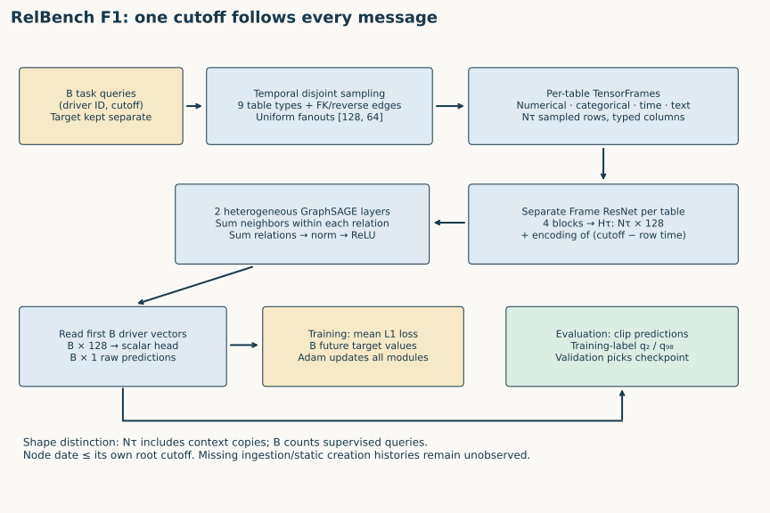
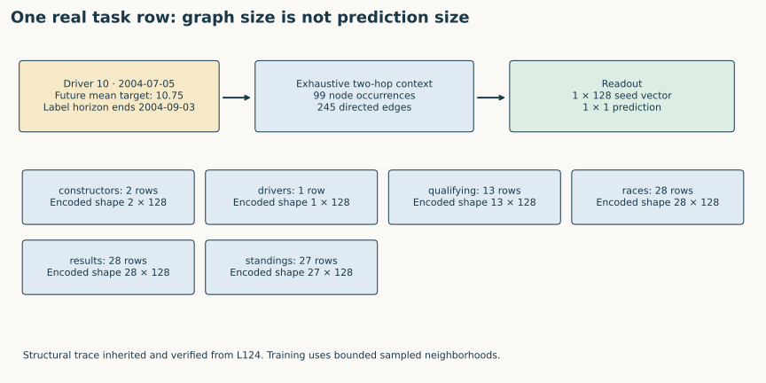
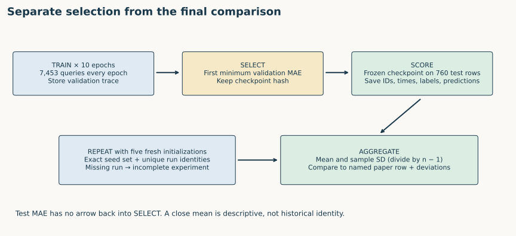
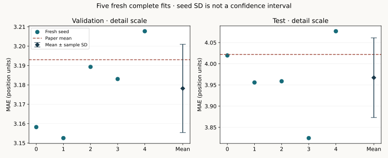

Year 4 · Quarter 1 · Lesson 127
RelBench v1: run and audit the RDL baseline
The win. Run a complete RelBench baseline and explain exactly what its result establishes. You will freeze a configuration, trace a real prediction through the model, select a checkpoint using validation alone, and aggregate five independent runs without hiding missing evidence.
Student lab · Executed solution · Reference · Reproduction contract and commands
1 · From an API tour to a defensible experiment¶
In Lesson 126, a Dataset exposed tables and cutoffs, and a Task exposed questions and an evaluator. That is enough to score a constant predictor. It does not determine which neural model to train, how to select it, or whether a score can be compared with a paper. Lesson 127 connects these choices into one experiment.
Recall the pieces you can now assemble: L122 maps rows and foreign keys to a graph; L123 attaches the query cutoff to every hop; L124 separates entity rows from supervised questions; L125 turns typed columns into vectors. Here the tangible skill is keeping those contracts fixed while training and evaluating.
Before reading: can a low test MAE prove the correct temporal cutoff was used? What additional artifact would you inspect? Write one sentence; return to it after the batch audit.
2 · What the original benchmark standardizes¶
Read Robinson et al., RelBench, arXiv:2407.20060v1, §2–3, Table 1, Table 7 and Appendix B. This lesson pins the July 2024 paper version; “RelBench v1” here names the original benchmark, not whatever package is newest. The benchmark supplies databases, prediction tasks, temporal splits and evaluation rules. A model and its training choices remain part of the experiment.
| Original database | Domain | Tasks | Tables | Rows available by test cutoff |
|---|---|---|---|---|
| rel-amazon | E-commerce | 7 | 3 | 15,000,713 |
| rel-avito | E-commerce | 4 | 8 | 20,679,117 |
| rel-event | Social | 3 | 5 | 41,328,337 |
| rel-f1 | Sports | 3 | 9 | 74,063 |
| rel-hm | E-commerce | 3 | 3 | 16,664,809 |
| rel-stack | Social | 5 | 7 | 4,247,264 |
| rel-trial | Medical | 5 | 15 | 5,434,924 |
These are paper Table 1 counts, after its test cutoff, not contemporary repository counts or counts of labeled examples. Thirty tasks share seven databases; a row can provide context without carrying a training label. Our executed experiment uses all nine F1 tables and its complete selected task. The other six databases are overview material and NOT_RUN in this lesson.
The three benchmark task families need different prediction objects: a scalar probability for entity classification, a real value for entity regression, or a ranked target list for recommendation. Their metrics cannot be averaged in raw units. Lesson 128 will develop the head/metric taxonomy; today use regression and MAE so the whole experiment stays inspectable.
CHECK: F1 has 74,063 graph rows but 7,453 training queries. Which number belongs in the loss denominator? Answer: the supervised seed queries in the current batch, not every context row in the database.
3 · Freeze the question before fitting¶
Our target is Table 7, rel-f1 / driver-position, RDL. At each task cutoff the model predicts a driver's mean finishing position over the next 60 days under the released task's eligibility rule. Lower MAE is better. Full task reconstruction and outcome-conditioned cohort caveats are explained in L124; we preserve that task definition rather than silently invent a new one.
| Component | Frozen released-protocol experiment |
|---|---|
| Database | All 74,063 exposed F1 rows, nine tables; test cap 2010-01-01 |
| Supervision | 7,453 train / 499 validation / 760 test queries |
| Initialization | Five fresh seeds 0–4; preprocessing seed 42 |
| Features | Released stype inference, pinned text encoder, per-table Frame ResNets |
| GNN | Two heterogeneous GraphSAGE layers; sum aggregation; width 128 |
| Sampling | Uniform temporal neighbors, fanouts [128, 64], root cutoff retained |
| Training | Adam, learning rate .005, batch 512, ten complete epochs, mean L1 loss |
| Selection | First epoch attaining the lowest validation MAE |
| Evaluation | Released output clipping at training-label percentiles 2 and 98; all final queries |
The data archives, source commit and environment have recorded checksums. The original paper's neighbor table says 128, while this released script uses [128,64]; released feature statistics use the database through its test cap. Those are disclosed protocol boundaries, not evidence of train-only preprocessing. Historical seeds, binary versions and exact training commit are unestablished. Protocol ledger · Source pins.
TODO 1 — experiment_contract. Return a fresh configuration on every call. Reject unknown keys and changes to the frozen values. A ten-epoch experiment changed to one epoch is a pilot and must receive a different label. CHECK: mutating one returned fanout list must not affect a later call; requesting test-based selection must fail. The notebook uses your returned epoch count and seed identities to check real run artifacts.
4 · Model architecture: follow one question through the computation¶
Follow the computation
A relational prediction begins with an entity and a time
- 1
Form a query-owned neighborhood
Use the task entity and cutoff; keep future target values separate.
- 2
Encode heterogeneous rows
Per-table feature encoders and relative-time features create common-width vectors.
- 3
Pass typed messages
Two layers aggregate eligible context and update root representations.
- 4
Select the task readout
Root head → task loss for training; validation selection → frozen test scoring.
Open the decisive operation
Can two occurrences of the same entity share arbitrary context when their cutoffs differ?
No. They ask different historical questions; context must remain attached to its query owner.
Trace answer: No. They ask different historical questions; context must remain attached to its query owner.
RelBench task pipeline. Read the lesson’s task-specific head, metric and timestamp contract with the full diagram.


Diagram trace. Trace one driver-time query through sampling and the two graph layers. Which rows contribute labels and which only contribute messages? On a narrow screen, scroll the figure sideways.
Start with a task row (driver_id, cutoff, target). Only identity and cutoff enter the input path. The future target takes a separate path to the loss. Temporal sampling builds a disjoint neighborhood per query: the same database row may occur twice when two queries have different cutoffs, but messages must not cross between their copies.
For each table type τ, its TensorFrame contains typed column tensors for the sampled rows. Numerical and categorical encoders, timestamp features and the pinned text representation feed a table-specific ResNet. Its four blocks produce Hτ ∈ R^(Nτ × 128). These encoders learn separately for each table because a driver and a result row have different feature schemas. For dated tables, the model adds an encoding of the difference between seed time and row time. Undated tables have no equivalent timestamp check; their missing creation histories remain an assumption.
For a relation r: source → destination, sum-GraphSAGE forms a transformed neighbor sum plus a transformed destination vector. The relation outputs are summed at each destination type, then normalized and rectified. Repeat for two layers. A two-hop result can therefore convey information through an intermediate entity. It can also be excluded at either hop by the same root cutoff. The source includes reverse FK edges, so direction and relation type are part of this computation, not interchangeable decorations. Pinned operators · Visible model.
The final readout keeps the first B seed vectors for the driver type. The scalar head returns B × 1 outputs. L1 = sum_i |prediction_i − target_i| / B supplies gradients through the head, message-passing layers and row encoders. Context rows help construct those predictions but receive no separate task loss. At evaluation the released code clips predictions using training-label quantiles; validation then determines which checkpoint survives.
Read the executed forward path. The released model first encodes rows, adds relative time, applies the typed GNN, and slices the seed vectors for the head. Optional shallow/ID-aware branches in the source are inactive in this experiment.
def forward(
self,
batch: HeteroData,
entity_table: NodeType,
) -> Tensor:
seed_time = batch[entity_table].seed_time
x_dict = self.encoder(batch.tf_dict)
rel_time_dict = self.temporal_encoder(
seed_time, batch.time_dict, batch.batch_dict
)
for node_type, rel_time in rel_time_dict.items():
x_dict[node_type] = x_dict[node_type] + rel_time
for node_type, embedding in self.embedding_dict.items():
x_dict[node_type] = x_dict[node_type] + embedding(batch[node_type].n_id)
x_dict = self.gnn(
x_dict,
batch.edge_index_dict,
batch.num_sampled_nodes_dict,
batch.num_sampled_edges_dict,
)
return self.head(x_dict[entity_table][: seed_time.size(0)])


Trace task. The notebook embeds a real L124 query and its independently reconstructed 99-node / 245-edge exhaustive two-hop neighborhood. Identify the seed and explain why the output has one scalar, not 99. This is an input-structure trace; the training sampler uses bounded fanouts and stochastic selection, so this exhaustive graph is not advertised as the exact sampled training batch. Fresh training separately audits every actual batch.
Predict: if a result's event date changes from before the root cutoff to after it, where should it disappear? At sampling, before row encoding and message passing. Masking only its direct connection after two-hop aggregation is too late.
5 · Training is a sequence of decisions, not one score¶
Each epoch visits every training query once, computes losses on seed predictions and updates parameters. Validation visits its own queries without gradient updates. Store the first checkpoint that improves the validation MAE; a tie retains the earlier epoch. Repeat for all ten epochs even when the earliest checkpoint remains best. Only then evaluate the selected model on the test queries.
A sampled neighborhood adds randomness even in evaluation. Our ledger preserves both the epoch's selection MAE and the final validation replay MAE; they need not be bit-identical. The selected epoch is justified by the epoch trace, not retroactively by the later replay or the test result. Fresh final batches are also passed to the pinned original model with the same weights, separating model parity from sampling differences.
Inspect the load-bearing training decision. Notice where gradients stop for validation and where the strict comparison preserves the first tie. The loop records every epoch before the selected state is restored.
for epoch in range(1,epochs+1):
model.train();loss_sum=0.;count=0
for batch in loaders['train']:
batch=batch.to(device);optimizer.zero_grad()
pred=model(batch,task.entity_table).view(-1)
loss=torch.nn.functional.l1_loss(pred.float(),batch[task.entity_table].y.float())
loss.backward();optimizer.step()
count+=len(pred);loss_sum+=float(loss.detach())*len(pred)
assert count==7453
val,_,_=predict(loaders['val'])
score=float(np.mean(np.abs(val-tables['val'].df[task.target_col].to_numpy())))
trace.append(dict(epoch=epoch,train_mae=loss_sum/count,val_mae=score,train_queries=count))
if score<best:best=score;state=copy.deepcopy(model.state_dict());selected=epoch
print(json.dumps(trace[-1]),flush=True)
model.load_state_dict(state);model.eval()
TODO 2 — select_checkpoint. Verify exactly the expected number of consecutive epochs, complete training-query coverage and finite validation errors. Return the first validation minimum. Do not read test values. CHECK: for validation errors [3, 2, 2], choose epoch 2 even when epoch 3 has the lowest test error. Reverse the trace, omit an epoch or inject NaN: reject the record. In the notebook your function selects all five real author checkpoints.
This is the smallest local decision with a large experimental consequence. Looking at ten test values and choosing the best turns test into another validation set. The reported score then answers a different question from “how did a validation-selected model generalize?”
6 · Five runs: verify membership before taking a mean¶
Suppose seed 4 failed. Averaging seeds 0–3 and labeling the result “five seeds” is incorrect. So is copying seed 0's artifact into a seed-4 directory. Require the expected seed set, distinct run identities, completion markers, ten epochs and finite metrics before computing anything.
TODO 3 — summarize_seeds. Compute arithmetic means and sample standard deviations only after checking that contract. For values [1,2,3,4,5], the mean is 3 and sample SD is sqrt(10/4), about 1.5811. Population SD divides by five and answers a different descriptive question. CHECK: reject a missing seed, duplicate identity, unfinished status, partial epoch count or nonfinite result. The real-data harness independently rescores every prediction before calling your function.


A seed SD describes variation among these fits. It is not a confidence interval, and overlap with a published SD does not establish equivalence. We predeclare 0.2 MAE as a descriptive closeness tolerance for the mean; CLOSE means only that this threshold was met. A close score cannot repair a protocol mismatch.
7 · Fresh measured evidence¶
Fresh author execution: COMPLETE selected released-protocol experiment. Five new seeds, ten complete epochs each.
| Split | Mean MAE | Sample seed SD | Paper mean | Verdict |
|---|---|---|---|---|
| val | 3.178174 | 0.022776 | 3.193 | CLOSE |
| test | 3.967165 | 0.093906 | 4.022 | CLOSE |
| Seed | Selected epoch | Selection MAE | Final validation MAE | Test MAE |
|---|---|---|---|---|
| 0 | 10 | 3.162397 | 3.158234 | 4.019688 |
| 1 | 9 | 3.149294 | 3.152550 | 3.955867 |
| 2 | 9 | 3.190597 | 3.189320 | 3.958788 |
| 3 | 10 | 3.186572 | 3.183047 | 3.824692 |
| 4 | 7 | 3.208308 | 3.207717 | 4.076791 |
All 6,295 final predictions independently rescored; 403,895 training/evaluation query occurrences audited. Maximum original-model output discrepancy 2.86e-06. Pilot plus five-fit worker resource estimate USD 0.063399, excluding unitemized overhead; six bounded worker reservations consumed within the USD10 plan, no retries. Evidence · Independent archive/SQL audit.


The reproduction uses complete data and full epochs for this selected experiment. The artifacts contain epoch traces, selected checkpoint hashes, prediction identities, original-model replay discrepancies, fresh run UUIDs and per-batch temporal audit counts. The scalar scoring audit uses saved predictions, rather than trusting the trainer's printed metric.
Evidence answers separate questions:
| Evidence | What it establishes | What remains open |
|---|---|---|
| Source checks and fixture gradients | Included model equations agree with pinned implementation | Historical executable identity |
| Archive hashes and full query counts | Same pinned released data, complete selected split coverage | Historical paper archive identity |
| Batch audit | Node time ≤ own root cutoff; original edge identity; query isolation | Missing ingestion times and feature histories |
| Saved predictions and independent MAE | Complete final scoring and consistent query keys | Generalization beyond this task |
| Five fresh complete runs | Observed released-protocol seed variation | All 30 tasks or the user study |
| Notebook/browser checks | Tested local teaching package | Learner mastery, live Colab or deployment |
Author execution is not learner completion. Your status remains PENDING_WRITTEN_DEFENSE. Whole-paper and historical parity remain NOT_ESTABLISHED; the other benchmark tasks are NOT_RUN here.
8 · Run, inspect, then defend¶
The default standalone lab executes your three functions against synthetic counterexamples and the complete five-seed author evidence, independently scores 6,295 predictions, and traces the real query. It includes the visible model, graph construction, feature encoders, loss, training loop and important library primitives. An explicitly gated full-training cell and the checkout commands allow new fits. Rescoring embedded artifacts is labeled replay, not fresh training.
The author GPU lane uses a separate one-epoch pilot, then five ten-epoch fits. At most eight one-hour worker reservations plus overhead fit the US$10 aggregate plan; no automatic retry is enabled. Exact commands and resource accounting are in the reproduction contract. The notebook's optional local/Colab training gate does not itself enforce a dollar budget.
EXIT — submit evidence and a short written defense:
- Your three implemented functions and passing unchanged checks.
- For one real seed, identify its lowest epoch-validation MAE, selected epoch and final test MAE; explain why final validation replay can differ.
- Trace the example query through the input graph, row vectors, two message-passing layers and scalar head, with shapes and cutoff checks.
- Name two source/paper differences and one unobservable temporal assumption. Explain why
CLOSEdoes not remove them. - State the strongest claim the five fresh runs justify, and one claim they do not justify.
For spaced retrieval tomorrow, reconstruct the sequence “pin → train → select → score → aggregate” without notes. After Lesson 128, interleave this regression example with a classification and a recommendation task, changing the head/loss/metric while preserving the experimental discipline. Lesson 129 will examine the manual-feature comparison; we have not rerun that user study here.
Ask the agent follow-up questions about any unclear step, or bring your EXIT artifacts for a review. A successful run becomes understanding when you can explain both the computation and the limits of the comparison.
Carry this forward. Change head, loss and metric when the prediction request changes. Continue to Lesson 128.